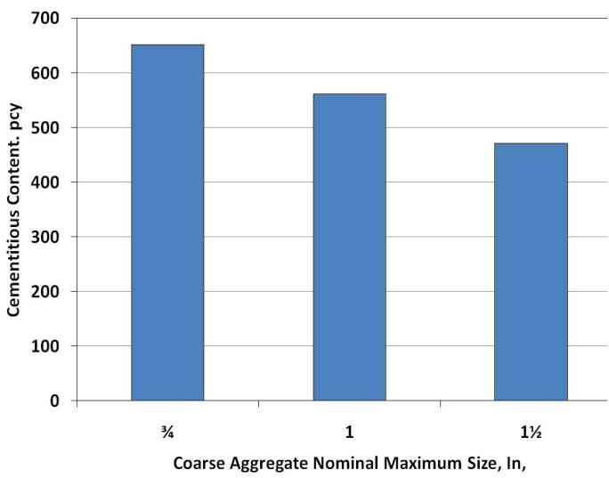
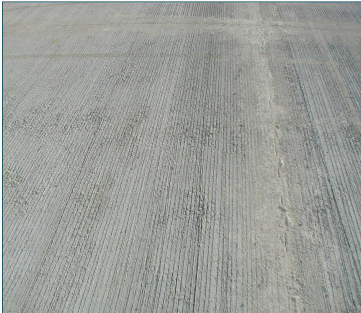
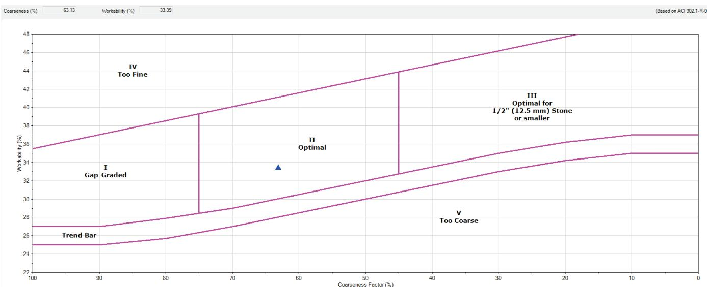

Aggregate Gradation and Workability Optimization
Aggregate gradation and workability optimization is the purposeful selection and proportioning of coarse, intermediate, and fine aggregates so that the largest practical nominal maximum size together with an intermediate particle (≈0.33 in.) fills the voids between coarse grains, creating a well‑graded, dense aggregate skeleton【1](#ref-1)】【2](#ref-2)]. This dense packing reduces the volume of cement paste needed for coating and lubrication, thereby lowering water demand while preserving fresh‑state flowability, slump, and finishability, which in turn enhances strength, durability, shrinkage control, and permeability performance【3](#ref-3)】【4](#ref-4)]. The resulting particle‑size distribution is quantified by ASTM C136/AASHTO T27 sieve analysis and plotted on diagnostic tools such as the Tarantula curve or the coarseness‑factor/workability chart, where the Coarseness Factor and Workability Factor must fall within Zone II to verify that the gradation meets optimized workability criteria【5](#ref-5)】【6](#ref-6)].
Sources (17)
Material purpose and applicability
Aggregate gradation is the deliberate selection of a range of particle sizes—using the largest practical maximum size together with an intermediate size that fills the voids between coarse particles—to form a well‑graded, or optimized, aggregate skeleton. The practice involves selecting and proportioning coarse, intermediate and fine aggregates—often guided by tools such as the Tarantula Curve—to achieve dense particle packing that keeps concrete workable while limiting cement paste volume. A well‑graded aggregate provides a matrix with good particle interlock, strength potential, volume of economy, workability and extrusion integrity. By using this optimized grading the mix requires less cementitious paste, which supplies the fresh‑state properties of workability, finishability and placement ease and delivers hardened‑state performance such as strength, durability, low shrinkage and reduced permeability. [1][2][3][4][6][7][8][9][10][11][12][14][16]
The figure below illustrates how this optimized gradation enables smaller particles to fill voids between larger ones, thereby maximizing aggregate volume.
 Comparison of aggregate voids and water requirements for different gradations. [2]
Comparison of aggregate voids and water requirements for different gradations. [2]
The figure displays three beakers containing aggregates with varying particle size distributions, ranging from a mix of large and small particles to single-sized coarse or fine materials. Below the beakers, graduated cylinders show that the mixture with well-graded aggregate requires less water volume compared to those with gap-graded aggregates.
[1] — Ch. 3 (p. 21); [2] — Ch. 2 (pp. 38–39), Ch. 3 (pp. 82–89), Ch. 6 (p. 150), Ch. 7 (pp. 207–210), Ch. 9 (p. 274), Ch. 10 (p. 333); [3] — Ch. 2 (pp. 67–68), Ch. 5 (pp. 183–191), Ch. 6 (pp. 323–329), App. D (pp. 423–429), App. F (pp. 474–476); [4] — 2 Overview of Concrete Pavemen… (pp. 17–18), Concrete Materials Selection a… (p. 13); [6] — Ch. 3 (pp. 39–40); [7] — Ch. 1 (pp. 38–41); [8] — Susceptibility to Slab Warping… (pp. 11–14); [9] — Ch. 19 (p. 481); [10] — Ch. 2 (pp. 23–24); [11] — 2. Factors Influencing Long-Li… (pp. 24–32); [12] — 2 Types and Mechanisms of Join… (pp. 21–22); [14] — Combined Gradation (pp. 20–23); [16] — Ch. 7 (p. 64)
Composition and characteristics
Aggregate gradation and workability optimization are defined by the particle‑size distribution of the combined coarse and fine aggregates, obtained through sieve analysis (ASTM C136, AASHTO T27). The blend includes a “Aggregate with the largest nominal maximum size that is practical for job conditions should be used” and an “An optimized gradation uses an intermediate aggregate size (e.g., ~0.33 in.) that fills the void space between the coarse aggregate particles.” Fine sand must meet the ASTM C33 requirement of “between ninety‑five and one hundred percent of its material pass a No. 4 (4.75 mm) sieve; this fine gradation establishes the particle size distribution that governs workability and limits paste demand in optimized mixes.”
The resulting composition is expressed by cumulative percentages retained on each sieve, plotted on a Tarantula Curve or 0.45‑power chart, and quantified with indices such as “Coarseness Factor (CF) shall be determined from the following equation” and “Workability Factor (WF) is defined as the percent passing the No. 8 sieve.” A well‑graded system exhibits “Well‑graded aggregate reduces the space between aggregate particles that has to be filled with cement paste” and, when multiple sizes are present, “When different sizes are combined, however, the void content decreases.” This dense packing – described as a “well graded, dense aggregate matrix” – allows “allow use of higher aggregate and lower paste contents” and reduces permeability because “reducing paste content while maintaining workability will lead to reduced permeability.”
Physical characteristics that govern performance include particle shape (“Particle shape (angular, flat, elongated or spherical)”), surface texture (“Rough surface texture (for bond and interlock).”), low water absorption (“Low absorption (reduces water requirement variability)”), durability requirements (“Aggregates must meet applicable freeze‑thaw durability, alkali‑aggregate reactivity, and wear‑resistance requirements”), and cleanliness (“Free of dust and clay contaminants.”) Limits are placed on flat or elongated particles (no more than 20 % by weight above 3/8‑in.) and on fines content (max 45 % retained between consecutive sieves). The gradation must satisfy “Combined gradation of the system should be in Zone II of the coarseness‑factor/workability chart” and meet the minimum limits of ASTM C33/AASHTO M6.
Workability is achieved by selecting the largest practical nominal maximum size (“The nominal maximum coarse aggregate size should be no greater than one third of the overlay thickness.”) and ensuring a “coarse‑sand fraction governs cohesion properties such as segregation resistance and edge slump” while the “fine‑sand fraction controls finishability and surface voids within a prescribed range.” The use of rounded, cubic or sub‑angular particles – “Rounded and cubic, sub‑angular particles are better than elongated ones for consolidation in concrete for paving applications” – further enhances flow. Optimized gradations such as the “"Shilstone" optimized gradation” reduce paste demand, allowing lower water‑to‑cement ratios (≈0.40–0.42) and providing a “Provide a workable plastic concrete mixture” with reduced shrinkage and improved durability. [1][2][3][4][5][6][7][8][9][10][11][12][14][16][17]
The figure below illustrates how cementitious content decreases as coarse aggregate size increases.

Reduction of cementitious content with increasing coarse aggregate size (based on ACI 211) [7]The figure displays a bar chart illustrating the reduction in cementitious content as the nominal maximum size of coarse aggregate increases from three-quarters to one and a half inches.
[1] — Ch. 3 (p. 21); [2] — Ch. 2 (pp. 38–39), Ch. 3 (pp. 82–90), Ch. 6 (p. 150), Ch. 7 (pp. 207–214), Ch. 9 (p. 274), Ch. 10 (pp. 314–333); [3] — Ch. 2 (pp. 67–68), Ch. 5 (pp. 183–191), Ch. 6 (pp. 323–329), App. D (pp. 423–429), App. F (pp. 474–476); [4] — 2 Overview of Concrete Pavemen… (pp. 17–18), Concrete Materials Selection a… (p. 13); [5] — Fine aggregate (p. 14); [6] — Ch. 3 (pp. 39–40), Ch. 4 (pp. 66–67); [7] — Ch. 1 (pp. 38–41); [8] — Susceptibility to Slab Warping… (pp. 11–14); [9] — Ch. 19 (p. 481); [10] — Ch. 2 (pp. 23–24); [11] — 2. Factors Influencing Long-Li… (pp. 24–32); [12] — 2 Types and Mechanisms of Join… (pp. 21–22); [14] — Combined Gradation (pp. 20–23); [16] — Ch. 7 (pp. 64–65); [17] — 2. Overview of Thin Concrete O… (pp. 23–24)
Variations in aggregate composition, source, processing, or proportioning manifest directly in the combined particle‑size distribution and therefore control concrete workability and pavement performance. When the gradation deviates from the target, “the resulting porosity and drainage characteristics change, which can impair consolidation and reduce workability” (Concrete PVMT Distress guide). The guides agree that a well‑graded aggregate – “a balanced variety of sizes” and “sufficient particles on all sieve sizes” – is preferred because it minimizes void space, lowers paste demand, and improves flow. An optimized gradation typically uses “the largest nominal maximum size that is practical for job conditions” together with “an intermediate aggregate size (e.g., ~0.33 in.) that fills the void space between the coarse aggregate particles,” thereby reducing the cement paste volume and associated durability issues.
Composition matters: flat or elongated particles “are not allowed to exceed 20 % by weight” and raise the Coarseness Factor, making the mix harder to consolidate; finer material “increases the water demand of concrete” and can produce a harsh or sticky mixture – “a deficiency of fine aggregate can lead to a harsh mixture … whereas an excess of very fine material will make the mix sticky.” Conversely, more spherical particles “generally produce more workable mixtures than elongated or angular ones.”
Source changes and blending alter the fineness modulus and may create a “critical sieve” that shifts the coarseness‑factor/workability point outside allowable limits. The need for a third intermediate size is emphasized – “the third intermediate size aggregate is normally required to develop the well graded combined gradation.” Uniformly graded aggregates exacerbate problems by providing few points of particle‑to‑particle contact, poor interlock and larger voids; a well‑graded blend supplies particles on all sieve sizes, improves interlock, lowers paste requirement and keeps the CF/WF point within the calibrated workability zone.
Processing steps such as crushing, stockpiling, or inadequate QC introduce variability in retained percentages, moisture content, and deleterious substances – “processing controls … can introduce inconsistencies in gradation or deleterious substances, which degrade workability and long‑term performance.” Regular testing of aggregate moisture (“Aggregate moisture content should be regularly tested in accordance with ASTM C 566”) and adjustment of mix proportions are required to maintain the intended paste volume.
Proportioning indices link gradation to fresh properties: the Coarseness Factor and Workability Factor “relate the percent of the combined aggregate that passes the #8 sieve plus an adjustment for the amount of cementitious material” to slump performance. By increasing aggregate volume or using a well‑graded mix guided by the Tarantula Curve – “The mixture’s workability can be maintained by optimizing the aggregate gradation. One way to do this is with a gradation technique called the Tarantula Curve” – the total paste can be kept at or below the prescribed 25 % limit, reducing shrinkage and enhancing durability. The T‑Curve provides a wide band of acceptable combined gradations that “will yield acceptable results with respect to workability (response to vibration) for slipformed mixtures,” allowing field adjustments of water, admixture dosage, or minor aggregate re‑proportioning.
Overall, the evidence shows that well‑graded aggregates lower water demand – “well‑graded mixtures require less water than mixtures with gap‑graded aggregates” – improve permeability, increase workability, and enable a higher aggregate‑to‑paste fraction, which together reduce shrinkage, enhance freeze‑thaw resistance, and promote long‑term pavement performance. [1][2][3][4][6][7][8][9][10][11][12][14][16]
[1] — Ch. 3 (p. 21); [2] — Ch. 2 (pp. 38–39), Ch. 3 (pp. 82–89), Ch. 6 (p. 150), Ch. 7 (pp. 207–212); [3] — Ch. 2 (pp. 67–68), Ch. 5 (pp. 183–191), Ch. 6 (pp. 323–329), App. D (pp. 423–429), App. F (pp. 474–476); [4] — 2 Overview of Concrete Pavemen… (pp. 17–18), Concrete Materials Selection a… (p. 13); [6] — Ch. 3 (pp. 39–40), Ch. 4 (pp. 66–67); [7] — Ch. 1 (pp. 38–41); [8] — Susceptibility to Slab Warping… (pp. 11–14); [9] — Ch. 19 (p. 481); [10] — Ch. 2 (pp. 23–24); [11] — 2. Factors Influencing Long-Li… (pp. 24–32); [12] — 2 Types and Mechanisms of Join… (p. 21); [14] — Combined Gradation (pp. 20–23); [16] — Ch. 7 (pp. 64–65)
Key material properties
Aggregate gradation and workability optimization depend on a set of interrelated aggregate attributes that fall into physical, mechanical, chemical and thermal categories. The physical foundation is the particle‑size distribution; an optimized shape allows higher aggregate volume and reduces cement paste demand while still providing the required workability and strength. Mechanical durability is expressed through wear resistance; abrasion loss must be limited (no more than 40 % for coarse aggregates per ASTM C131) to keep the skeleton intact during placement and service. Chemical stability requires that aggregates be inert, especially resistant to alkali‑aggregate reactions, so that deleterious expansion does not compromise hardened concrete. Thermal performance is addressed by selecting aggregates with a low coefficient of thermal expansion, which minimizes cracking caused by temperature‑induced volume changes. Together these properties enable lower paste demand, maintain fresh‑state flowability, and support long‑term durability. [1][2][3][4][5][6][7][9][10][11][12][14][16][17]
[1] — Ch. 3 (p. 21); [2] — Ch. 2 (pp. 38–39), Ch. 3 (pp. 82–90), Ch. 6 (p. 150), Ch. 7 (pp. 207–214), Ch. 9 (p. 274), Ch. 10 (pp. 314–333); [3] — Ch. 2 (pp. 67–68), Ch. 5 (pp. 183–191), Ch. 6 (pp. 323–329), App. D (pp. 423–429), App. F (pp. 474–476); [4] — 2 Overview of Concrete Pavemen… (pp. 17–18), Concrete Materials Selection a… (p. 13); [5] — Fine aggregate (p. 14); [6] — Ch. 3 (pp. 39–40), Ch. 4 (pp. 66–67); [7] — Ch. 1 (pp. 38–41); [9] — Ch. 19 (p. 481); [10] — Ch. 2 (pp. 23–24); [11] — 2. Factors Influencing Long-Li… (pp. 24–32); [12] — 2 Types and Mechanisms of Join… (pp. 21–22); [14] — Combined Gradation (pp. 20–23); [16] — Ch. 7 (p. 64); [17] — 2. Overview of Thin Concrete O… (pp. 23–24)
The aggregate gradation of a concrete mix is measured by performing a standard sieve analysis in accordance with ASTM C136 (or AASHTO T 27), “Aggregate gradation is quantified by sieve analysis, where the particle‑size distribution is obtained by passing the material through a series of standard sieves (ASTM C136/C136M and AASHTO T 27).” The percentages retained or passed on each sieve are plotted to generate a particle‑size distribution curve. Aggregates are classified as coarse or fine at the No. 4 opening – “Aggregates are often classified by particle size, being normally defined as “coarse” and “fine” split at the No. 4 (0.187 in. [4.75 mm]) nominal sieve opening.” A blend is considered well‑graded when the distribution forms a continuous range that fills voids; the guides describe this condition as “optimized gradation uses an intermediate aggregate size (e.g., ~0.33 in.) that fills the void space between the coarse aggregate particles” and as “a well‑graded blend, identified by its continuous range of sizes.” To verify compliance, the measured curve is compared with the Tarantula envelope or coarseness/workability charts: “The sieve analysis … is compared to an optimized system (Tarantula curve) using a graphical model; when the plotted distribution lies within the Tarantula‑curve envelope the blend is classified as well‑graded and expected to minimize paste demand,” and “Combined gradation of the system should be in Zone II of the coarseness‑factor/workability chart.” Quantitative indices used are the Coarseness Factor (CF) and Workability Factor (WF): “CF = (cumulative percent retained on the 3/8 in sieve) (100) / cumulative percent retained on the No. 8 sieve)” and “The WF is defined as the percent passing the No. 8 sieve based on the combined gradation.” The calculated CF‑WF pair is plotted on a workability box or T‑Curve: “The calculated CF and WF are plotted on the workability box and compared to the accepted CF and WF,” and “Coarse Sand. The T‑Curve defines coarse sand as the sum of the percent retained on the #8, #16, and #30 sieves.”
Workability optimization is quantified through the void‑ratio method: “Workability optimization is then assessed through the void‑ratio approach: the amount of paste required in a mixture is dependent on the volume of voids in the combined aggregate system, which is measured according to ASTM C29.” Fresh‑concrete tests are also employed: “Both the Box Test (AASHTO TP 137) and the Vibrating Kelly Ball (VKelly) Test (AASHTO T 403) may be useful for evaluating the workability of trial mixtures.” Aggregate moisture is monitored and incorporated into water adjustments: “Monitoring the moisture content of the aggregate in the stockpile and adjusting the mixing water required accordingly” and “Aggregate moisture content should be regularly tested in accordance with ASTM C 566.” The net effect of a well‑graded gradation is reduced water demand: “mixtures made with well graded systems tend to be more workable, which in turn means that less water is required to achieve the same workability,” “Reduce the water demand,” and “Well‑graded mixtures require less water than mixtures with gap‑graded aggregates.” Additional physical properties influencing workability are measured by standard methods: “Common tests for the physical properties of aggregates include ASTM C29, Standard Test Method for Bulk Density (“Unit Weight”) and Voids in Aggregate; ASTM C127, Standard Test Method for Density, Relative Density (Specific Gravity), and Absorption of Coarse Aggregate; and ASTM C128, Standard Test Method for Density, Relative Density (Specific Gravity), and Absorption of Fine Aggregate.” Grading charts such as the 0.45‑power chart provide a graphical check: “The 0.45 power chart plots the combined grading on a chart with sieve size on the horizontal axis (scale = sieve size [μm] 0.45) and percent passing on the vertical axis.” [1][2][3][5][6][7][8][9][11][12][14][16]
The figure below illustrates the various moisture conditions of aggregate that must be monitored to ensure accurate workability optimization.
 Moisture conditions of aggregate (ACPA 2015). [3]
Moisture conditions of aggregate (ACPA 2015). [3]
The figure displays four schematic representations of a single aggregate particle, illustrating the progression from Oven-Dry to Wet states. It visually defines Saturated Surface Dry (SSD) as the condition where pores are completely filled with water but no excess moisture exists on the surface, contrasting this with Oven-Dry (no water in pores), Air-Dry (some water but not filled), and Wet (pores filled plus excess).
[1] — Ch. 3 (p. 21); [2] — Ch. 3 (pp. 82–89), Ch. 6 (p. 150), Ch. 7 (pp. 207–214), Ch. 9 (p. 274), Ch. 10 (pp. 314–333); [3] — Ch. 2 (pp. 67–68), Ch. 5 (pp. 183–191), Ch. 6 (pp. 323–329), App. D (pp. 423–429), App. F (pp. 474–476); [5] — Fine aggregate (p. 14); [6] — Ch. 3 (pp. 39–40), Ch. 4 (pp. 66–67); [7] — Ch. 1 (p. 41); [8] — Susceptibility to Slab Warping… (pp. 11–14); [9] — Ch. 19 (p. 481); [11] — 2. Factors Influencing Long-Li… (pp. 24–32); [12] — 2 Types and Mechanisms of Join… (pp. 21–22); [14] — Combined Gradation (pp. 20–23); [16] — Ch. 7 (pp. 64–65)
Behavior and mechanisms
The guides concur that Well‑graded, optimized aggregate gradations—selected so the maximum size is practical for the job (no larger than one‑third the slab thickness and three‑quarters of the clear spacing to reinforcement) and supplemented with an intermediate particle around 0.33 in that fills the voids between coarse grains—significantly cut the cement paste volume required. Because aggregates are generally chemically and dimensionally stable, a well‑graded aggregate skeleton maintains consistent behavior under loading, limiting the volume of reactive paste that can be affected by moisture or chemicals. Optimized, well‑graded aggregates create a dense, interlocked skeleton that reduces paste demand, improves workability, and provides superior mechanical performance under service loads. Increasing aggregate volume by using an optimized gradation lowers the paste fraction, which reduces the amount of hydrated cement that can lose water and therefore diminishes drying‑shrinkage strain; the extra aggregate also provides internal restraint that limits deformation as moisture conditions change. [1][2][3][4][8][11][12]
The figure below illustrates how aggregate gradation influences workability relative to paste content.
 Effect of aggregate gradation on workability as a function of paste content [2]
Effect of aggregate gradation on workability as a function of paste content [2]
The figure plots the V-Kelly Index, a measure of concrete workability, against varying paste contents for three distinct aggregate gradations.
[1] — Ch. 3 (p. 21); [2] — Ch. 2 (pp. 38–39), Ch. 3 (pp. 82–88), Ch. 7 (p. 212); [3] — Ch. 5 (pp. 183–191), App. D (pp. 423–429); [4] — 2 Overview of Concrete Pavemen… (pp. 17–18); [8] — Susceptibility to Slab Warping… (pp. 11–14); [11] — 2. Factors Influencing Long-Li… (p. 24); [12] — 2 Types and Mechanisms of Join… (p. 22)
The behavior of aggregate gradation and workability optimization is governed by three inter‑related mechanisms—physical, chemical, and mechanical.
Physical control arises from the way particles pack. The effectiveness of aggregate gradation in concrete stems from physical packing that fills voids between coarse particles, thereby lowering the cement paste demand. A well‑graded system creates a dense skeleton; gap‑graded or poorly graded blends leave excess voids and degrade pavement performance: Physical, the particle‑size distribution of the coarse aggregates sets the packing density (Coarseness Factor) and thus the amount of cement paste needed; gap‑graded or poorly graded blends leave excess voids and degrade pavement performance. This dense packing reduces water requirement because finer particles increase surface area while rounded shapes reduce inter‑particle friction.
Chemical control is provided by the inert nature of aggregates. Aggregates are generally chemically and dimensionally stable; therefore, it is desirable to maximize aggregate content in concrete mixtures compared to the more chemically reactive cement paste. Because they do not participate in hydration, a higher aggregate proportion can be used without altering binder chemistry, as long as deleterious constituents (e.g., ASR‑prone material) are excluded.
Mechanical control involves both the handling of aggregates and the consolidation during placement. Mechanically, handling operations – crushing, screening, loading, transport and stock‑pile management – can cause breakage, segregation or degradation of aggregates, altering the intended gradation and thus the mix’s flow characteristics. Maintaining the designed gradation ensures sufficient paste to lubricate particles while avoiding excess paste that would reduce strength or durability. [1][2][3][4][6][7][8][9][11][12][14][16]
[1] — Ch. 3 (p. 21); [2] — Ch. 2 (pp. 38–39), Ch. 3 (pp. 82–90), Ch. 6 (p. 150), Ch. 7 (pp. 207–212); [3] — Ch. 2 (pp. 67–68), Ch. 5 (pp. 183–191), Ch. 6 (pp. 323–329), App. D (pp. 423–429), App. F (pp. 474–476); [4] — 2 Overview of Concrete Pavemen… (pp. 17–18), Concrete Materials Selection a… (p. 13); [6] — Ch. 3 (pp. 39–40), Ch. 4 (pp. 66–67); [7] — Ch. 1 (pp. 38–41); [8] — Susceptibility to Slab Warping… (pp. 11–14); [9] — Ch. 19 (p. 481); [11] — 2. Factors Influencing Long-Li… (pp. 24–32); [12] — 2 Types and Mechanisms of Join… (pp. 21–22); [14] — Combined Gradation (pp. 20–23); [16] — Ch. 7 (p. 64)
Durability and deterioration
The durability of concrete that relies on an optimized aggregate gradation is undermined by several interrelated mechanisms acting in both fresh and hardened states. By selecting a well‑graded blend, designers “reduce the required cement paste volume”, which simultaneously “helps control shrinkage” and “reduces the amount of paste available to undergo chemical and physical distress mechanisms”. A direct benefit is that “well‑graded aggregates will improve concrete freezethaw durability”.
Aggregates must satisfy fundamental performance criteria; the guides require that they meet “freeze‑thaw durability”, exhibit low “alkali‑aggregate reactivity”, and possess adequate “wear‑resistance requirements”. In fact, “Aggregates must meet applicable freeze‑thaw durability, alkali‑aggregate reactivity, and wear‑resistance requirements.” When these criteria are not met, the concrete becomes vulnerable to freeze‑thaw damage, deleterious alkali reactions, and premature wear.
“Excessive water in the paste, however, reduces concrete durability by reducing strength and increasing permeability.” Maintaining low reactivity further protects against expansion; thus “Low alkali-aggregate reactivity (for reduced risk of deleterious ASR and ACR)” and “Frost resistant (for durability associated with D‑cracking and popouts)” are specified.
The physical integrity of the gradation can be compromised during handling. The guides warn that “Segregation separates certain sizes during handling, degradation breaks particles into finer fragments through impact, abrasion or crushing from wheel loads, transit and equipment contact, and contamination introduces undesirable materials that alter aggregate properties; each can cause placement and finishing problems.” Moreover, “Aggregates with large, interconnected pores readily absorb water which can then freeze and expand, causing internal stress and cracking.”
Even when the blend is initially correct, monitoring of gradation indices is essential. When “the calculated Coarseness Factor (CF) or Workability Factor (WF) drift outside established tolerance limits, the aggregate blend cannot be re‑balanced, indicating a loss of control that compromises durability and performance.” Deviations lead to poor drainage and consolidation: “improper aggregate can cause problems with drainage, consolidation, and many other factors that lead to pavement distress”, manifested as “evaluate settlement, heaves, cracking, shattered slabs, and faulting”.
Surface‑exposure considerations add further concerns. The guides state that “Coarse aggregate type is of consequence if the aggregates are expected to become exposed, through either surface wear or diamond grinding. The selection of a hard and durable aggregate is therefore preferred.” Excess mortar may improve texture but also raises risk: “increased mortar contents may lend themselves to more consistent and quieter textures, they will also have increased shrinkage (and thus increased crack potential) and higher permeability (and thus reduced durability).” Accordingly, “segregation of the mixture should be avoided, since not only will the tining process respond differently to concrete of varying volumetrics, but also the wear of a concrete surface will be non‑uniform, eventually leading to a ‘modulation’ in the noise level”.
Aggregate quality must meet agency specifications: “Aggregates should meet agency specifications related to soundness, AAR, and other characteristics”, and any “Deleterious substances contained within aggregates” must be excluded. Moisture variability after delivery can also impair workability and durability; as noted, “As hardened concrete dries, the loss of moisture results in shrinkage (known as drying shrinkage).” Reducing cementitious content by increasing aggregate volume mitigates this: “For a given w/cm ratio, reducing the cementitious materials content through increasing the aggregate volume will reduce the ultimate shrinkage of the concrete”.
Finally, exposure to aggressive environments demands a mix that is “dense, relatively impermeable, and resistant to both environmental effects and deleterious chemical reactions”. Practices such as deicing exacerbate moisture ingress: “deicing practices, for example, appear to be increasing the degree of saturation of concrete at the joints”, further stressing the need for robust aggregate gradation and controlled paste demand. [1][2][3][4][6][8][9][11][17]
[1] — Ch. 3 (p. 21); [2] — Ch. 2 (pp. 38–39), Ch. 3 (pp. 82–89), Ch. 7 (pp. 207–212); [3] — Ch. 2 (pp. 67–68), Ch. 5 (pp. 183–191), Ch. 6 (pp. 323–329), App. D (pp. 423–429), App. F (p. 474); [4] — 2 Overview of Concrete Pavemen… (pp. 17–18), Concrete Materials Selection a… (p. 13); [6] — Ch. 3 (pp. 39–40), Ch. 4 (pp. 66–67); [8] — Susceptibility to Slab Warping… (pp. 11–14); [9] — Ch. 19 (p. 481); [11] — 2. Factors Influencing Long-Li… (pp. 24–32); [17] — 2. Overview of Thin Concrete O… (pp. 23–24)
“A larger maximum aggregate size reduces the required cement paste volume, which helps control shrinkage and also reduces the amount of paste available to undergo chemical and physical distress mechanisms.” An optimized gradation that includes an intermediate particle (e.g., ~0.33 in.) “fills the void space between the coarse aggregate particles” and therefore “by reducing the cement paste content, all previously discussed paste‑related durability issues are reduced.” Conversely, “gap‑or poorly graded” aggregates such as standard ASTM C33 gradations “make airport concrete pavements more prone to performance loss and deterioration,” increase water demand, raise shrinkage and permeability, and promote segregation. High‑absorption aggregates with “large, interconnected pores readily absorb water which can then freeze and expand, causing internal stress and cracking,” and a “high absorption rate” make the mix “more susceptible to D‑cracking.” Soft or elongated particles are detrimental because “softer aggregates will have more aggregate loss than harder ones” under handling and wheel loads. Aggregates that contain deleterious material, exhibit high alkali content, clay coatings, or dust increase risk of ASR/ACR and wear damage. Excessive paste – “the volume of the paste shall not exceed 25 percent” – or cementitious content above ~325 kg/m³ raises capillary porosity, drying shrinkage, and chemical attack, especially in arid climates.
To reduce susceptibility, the guides stress using “well‑graded aggregates will improve concrete freezethaw durability” and “Well graded (for mixtures that require less water than mixtures with gap‑graded aggregates, have less shrinkage and permeability, are easier to handle and finish, and are usually the most economical)”. Hard, rounded or cubic/sub‑angular rock types meeting a durability factor ≥95 per ASTM C666 provide low absorption and high abrasion resistance. Low‑absorption, low‑alkali‑reactive, frost‑resistant aggregates further limit water variability and freeze‑thaw damage. Selecting “siliceous sands” over calcareous sand improves surface friction, while “hard and durable” coarse aggregate is preferred when exposure to wear or grinding is expected. Maintaining a well‑graded blend with an intermediate size fraction “reduces voids, limits paste demand, and keeps CF and WF within prescribed limits, thereby lowering the likelihood of deterioration.” Reducing paste proportion (≤25 % by volume) and cement content (~≤325 kg/m³) while keeping w/c around 0.40 lowers shrinkage potential; supplementing vulnerable aggregates with SCMs such as Class F fly ash or slag can further mitigate ASR.
Exposure conditions that heighten deterioration include repeated freeze‑thaw cycles (especially with deicing salts), aggressive salt attack, temperature swings causing thermal cracking, uncontrolled moisture changes after delivery, contamination, and physical damage that disrupts gradation. Proper stockpile management – “maintain uniform gradation (minimize segregation), maintain uniform moisture content, and minimize the potential for contamination” – together with “minimizing free fall heights of aggregates to avoid segregation” preserves the intended aggregate distribution and workability. [1][2][3][4][6][8][11][12]
[1] — Ch. 3 (p. 21); [2] — Ch. 2 (pp. 38–39), Ch. 3 (pp. 82–88), Ch. 7 (pp. 207–212); [3] — Ch. 2 (pp. 67–68), Ch. 5 (pp. 183–191), Ch. 6 (pp. 323–329), App. D (pp. 423–429); [4] — 2 Overview of Concrete Pavemen… (pp. 17–18), Concrete Materials Selection a… (p. 13); [6] — Ch. 4 (pp. 66–67); [8] — Susceptibility to Slab Warping… (pp. 11–14); [11] — 2. Factors Influencing Long-Li… (pp. 24–32); [12] — 2 Types and Mechanisms of Join… (pp. 21–22)
Material interactions and compatibility
The interaction between aggregate gradation and the binder system is governed by how efficiently the aggregate skeleton can be packed and coated. A well‑graded blend fills inter‑particle voids, which reduces the volume of cement paste required for coating, lubrication and workability; this directly lowers both water and cement demand and permits a lower w/c ratio while maintaining slump. “Optimized aggregate gradation directly influences how much cement paste is needed because a well‑graded combination fills voids and lowers the water‑and‑cement demand.” Consequently, the mix can achieve the desired strength and durability with less chemically reactive paste, limiting shrinkage and pathways for deterioration. However, aggregate absorption modifies this balance: high‑absorption particles act as internal reservoirs that withdraw mixing water, increasing the amount of paste needed to maintain workability and potentially affecting freeze‑thaw performance. “High absorption aggregates draw additional mix water, raising paste demand and potentially compromising freeze‑thaw durability,” Particle shape also influences the coating requirement; rounded or sub‑angular grains need less paste than elongated forms. When aggregates contain minerals prone to alkali–silica reaction, their mineralogy must be compatible with the cement chemistry; mitigation often involves adding supplementary cementitious materials such as fly ash or slag. “When reactive aggregates containing ASR‑prone minerals are present, the chemical compatibility between aggregate mineralogy and cement chemistry becomes critical, often requiring supplementary cementitious materials (SCMs) such as fly ash or slag to mitigate deleterious reactions.” By selecting the largest practical nominal maximum size and employing gradation optimization methods (e.g., the Tarantula Curve), designers can maximize dense packing, keep paste volume below typical limits, reduce cement content, and still meet workability targets through admixture adjustments. [1][2][3][4][6][7][8][10][11][12][14][17]
The following figure illustrates sieve analysis and the basic characteristics of gradations.
 Sieve analysis and the basic characteristics of gradations (adapted from ACPA 2015). [3]
Sieve analysis and the basic characteristics of gradations (adapted from ACPA 2015). [3]
The figure illustrates a sieve analysis apparatus on the left, showing how aggregate particles are separated by size into coarse, fine, and pan fractions. On the right, three distinct particle packing arrangements are depicted: uniformly-graded, gap-graded, and well-graded aggregates.
[1] — Ch. 3 (p. 21); [2] — Ch. 2 (pp. 38–39), Ch. 3 (pp. 82–90), Ch. 6 (p. 150), Ch. 7 (pp. 207–214); [3] — Ch. 2 (pp. 67–68), Ch. 5 (pp. 183–191), Ch. 6 (pp. 323–329), App. D (pp. 423–429), App. F (pp. 474–476); [4] — 2 Overview of Concrete Pavemen… (pp. 17–18), Concrete Materials Selection a… (p. 13); [6] — Ch. 3 (pp. 39–40), Ch. 4 (pp. 66–67); [7] — Ch. 1 (pp. 38–41); [8] — Susceptibility to Slab Warping… (pp. 11–14); [10] — Ch. 2 (pp. 23–24); [11] — 2. Factors Influencing Long-Li… (pp. 24–32); [12] — 2 Types and Mechanisms of Join… (pp. 21–22); [14] — Combined Gradation (pp. 20–23); [17] — 2. Overview of Thin Concrete O… (pp. 23–24)
The guides concur that aggregate gradation and workability optimization are limited by several compatibility hazards. Reactive minerals in aggregates can initiate alkali‑silica or alkali‑carbonate reactions, leading to expansion and cracking; therefore aggregates must satisfy an alkali‑aggregate reactivity requirement and be screened according to AASHTO PP 65. Surface contaminants such as clay coatings, dust, coal, lignite or other organic films impede cement hydration, increase water demand, raise permeability and promote shrinkage, so the aggregates used in optimized gradations must be free of these deleterious substances. Sulfate susceptibility is addressed through soundness testing; aggregates that exceed the loss limits in sodium‑sulfate (12 %) or magnesium‑sulfate (18 %) cycles are considered at risk for chemical attack and must be excluded. The sources also note that very fine clay particles raise specific surface area, demanding more paste and reducing the efficiency of a well‑graded mix. While some guides do not discuss additional incompatibilities such as dissimilar materials, corrosion of reinforcement, or other forms of chemical attack, the consensus is that controlling reactive aggregates, clay/organic contaminants, and sulfate‑induced deterioration is essential to maintain workability, durability, and economic performance of concrete pavements. [2][3][11]
[2] — Ch. 2 (pp. 38–39), Ch. 3 (pp. 82–88), Ch. 7 (p. 210); [3] — Ch. 5 (pp. 183–191); [11] — 2. Factors Influencing Long-Li… (pp. 24–32)
Influence of production and placement
Proper mixing that respects the designed aggregate gradation is the foundation of workability optimization. The guides state that “Control of the grading of the combined aggregates will help to achieve desirable workability while reducing the amount of paste required to meet engineering performance requirements.” and that “Well‑graded aggregate reduces the space between aggregate particles that has to be filled with cement paste. Well‑graded aggregate also contributes to achieving a workable mixture with a minimum amount of water.” In principle, “the more aggregate can be put into a mixture, the lower the amount of paste required,” yet “however, sufficient paste is required to achieve workability.” This balance is governed by the water‑to‑cementitious‑materials ratio: “Performance of a mixture is fundamentally controlled by the water-to-cementitious-materials (w/cm) ratio as long as there is sufficient paste in the mixture to fill the voids between the aggregate particles and to separate the aggregate particles so that they will flow past each other in the fresh state.” Reducing paste demand through an optimized gradation “workability can be improved with the use of admixtures, within limits, and by reducing paste demand through use of an optimized aggregate gradation that contains coarse, intermediate, and fine particles,” allowing “Reduce the water demand.” and achieving “Improved workability.”
During placement, process control must align the mix with field conditions. The sources note that “Process control requires adjusting the combined gradation CF and WF to the approved mix design at the start of each production day” and that “The target CF and WF must be changed from the laboratory mixture design phase to those consistent with the mixing, consolidation and finishing means and methods used to construct the pavement.” Hand‑placed concrete tends to be more fluid: “Hand placed concrete mixtures typically exhibit a WF greater than 35,” therefore “consistency of the mixture as batched and placed is paramount.” Poor handling can introduce variability that “results in poor workability for placement and finishing, weakened surface issues and increased potential for foreign object debris (FOD).” Segregation – defined as “the absence or separation of one or more particle sizes from a distribution of aggregate particles of different sizes in a specified gradation, usually through handling” – must be avoided; visual monitoring described in the slip‑form guidelines allows operators to detect “excessive voids, excessive slurry, edge slump, and edge instability” and make immediate adjustments such as water addition or admixture tweaking without exceeding the approved w/cm ratio.
Compaction benefits from the well‑graded skeleton. The guides observe that “Mixtures that must be heavily vibrated because the workability is poor run the risk of segregation and creation of low‑durability vibrator trails due to the air void system being compromised,” whereas “Mixtures that have well‑graded aggregate and are responsive to vibration can lead to significant savings during construction because less effort is required to consolidate and finish the slab, and they are likely to last longer because the surface has not been overworked to create the required finish.” Rounded and sub‑angular particles further aid consolidation: “Rounded and cubic, sub‑angular particles are better than elongated ones for consolidation in concrete for paving applications,” and “better workability will lead to better consolidation of the mixture.” The result is a mix that can “Consolidate without segregation” and avoids early distress, as “mixtures prone to segregation are prone to early distress.”
Finishing follows naturally from the high workability. Because the concrete flows readily, only light finishing is needed: “Require minimal finishing,” and the surface integrity is preserved, reducing the risk of over‑working that could create durability problems. The reduced paste volume also contributes to lower shrinkage (“have less shrinkage”) and makes the slab “easier to handle and finish.”
Although curing practices are not detailed in the cited excerpts, achieving the intended density, low permeability, and minimized segregation through proper mixing, placement, compaction, and finishing establishes the conditions that effective curing must preserve to maintain long‑term strength and durability. [2][3][4][7][11][12][14]
[2] — Ch. 7 (pp. 207–210); [3] — Ch. 5 (pp. 183–191), Ch. 6 (pp. 323–329), App. D (pp. 423–429), App. F (pp. 474–476); [4] — 2 Overview of Concrete Pavemen… (pp. 17–18), Concrete Materials Selection a… (p. 13); [7] — Ch. 1 (p. 38); [11] — 2. Factors Influencing Long-Li… (p. 24); [12] — 2 Types and Mechanisms of Join… (pp. 21–22); [14] — Combined Gradation (pp. 20–23)
Construction‑stage aggregate variations are identified as the dominant source of long‑term performance loss in mixes that rely on optimized gradation and workability. The guides state that Variations in the aggregate introduced during construction—such as changes in type, quality, cleanliness, grading, or moisture content—most strongly affect the long‑term behavior of gradation and workability optimization because they directly alter the filler’s ability to provide a well‑graded skeleton that controls paste demand, fresh workability, and durability. Moreover, Construction variations that disturb the intended aggregate gradation—such as using gap‑graded or single‑sized aggregates, allowing excess very fine sand or clay particles, or incorporating overly coarse aggregate—create mixes that are prone to segregation, demand extra water for workability, and develop higher shrinkage and permeability. Segregation of fine and coarse fractions during quarrying, transport, stockpiling, loading or vibration, creating a blend that no longer matches the target gradation and increasing paste demand is highlighted as a critical defect, reinforced by the observation that any departure from the specified uniformity and gradation of both fine and coarse aggregate is a primary source of long‑term performance loss. Contamination or inclusion of deleterious substances such as clay lumps, coal, lignite or other organics that weaken concrete durability, together with exceeding the allowable percentages of deleterious material in the aggregates compromises durability. Particle shape issues are noted: excess flat or elongated particles (>20 % by weight in any size coarser than 3/8 in.) and aggregates with large interconnected pores or high water absorption, which raise water demand and promote freeze‑thaw cracking. Physical degradation of the aggregate also contributes: degradation of aggregate particles through impact, abrasion or crushing, altering particle‑size distribution and reducing interlock. Variability in the combined Coarseness Factor (CF) and Workability Factor (WF) is flagged as a limiting factor: uncontrolled variability in the Coarseness Factor (CF) and Workability Factor (WF) caused by inconsistent quarry faces, worn screens, improper crusher settings, mis‑routed deliveries or malfunctioning charging‑bin gates, and when these defects shift the CF/WF point outside its tolerance limits, corrective adjustments become impossible. Selecting an inappropriate maximum particle size introduces a defect that accelerates thermal and drying shrinkage cracking. Insufficient paste to fill the inter‑particle voids, inadequate workability, and especially poor placement with weak consolidation directly undermine the long‑term benefits of an optimized aggregate gradation, and visual defects such as excessive voids, excess slurry, edge slump and edge instability, which reflect poor cohesion and segregation in the mix further erode performance. Excessive vibration—often introduced to improve consolidation—can undermine the benefits of a well‑graded aggregate system by disturbing the optimized particle packing and increasing permeability, thereby compromising long‑term durability. Moisture management errors are also cited as primary defects: gap‑graded blends, permitting dust or clay contamination, neglecting moisture‑content adjustments, or selecting aggregates with high water absorption, excessive Los Angeles abrasion, or elevated alkali‑silica reactivity—are the primary defects that undermine long‑term performance, and Inconsistent moisture measurement (not following ASTM C566) prevents proper batch‑plant compensation. Finally, any departures from the optimized particle‑size distribution identified by sieve analysis are linked to durability loss; the sample combined grading plot on the 0.45 power chart … crosses back and forth across the maximum density line, it indicates gap grading, and a general rule of thumb for optimized grading is to have between 8 to 18 % retained on each individual sieve; values outside this band signal a severe gap‑grading condition. These construction‑stage variations collectively reduce workability, increase paste demand, raise shrinkage and permeability, and precipitate long‑term distress such as settlement, cracking, and surface degradation. [2][3][4][6][7][9][11][12][14][16]
The following figure illustrates how such variability manifests as tined texture issues resulting from mix segregation and consistency problems.

Variability in tined texture due to mix segregation/consistency problems [4]The image displays a concrete pavement surface with longitudinal grooves that exhibit significant visual inconsistency, including areas where the mortar appears washed out or separated from the underlying aggregate.
[2] — Ch. 3 (pp. 82–90), Ch. 6 (p. 150), Ch. 7 (pp. 207–212); [3] — Ch. 2 (pp. 67–68), Ch. 5 (pp. 183–191), Ch. 6 (pp. 323–329), App. D (pp. 423–429), App. F (pp. 474–476); [4] — 2 Overview of Concrete Pavemen… (pp. 17–18), Concrete Materials Selection a… (p. 13); [6] — Ch. 3 (pp. 39–40), Ch. 4 (pp. 66–67); [7] — Ch. 1 (p. 38); [9] — Ch. 19 (p. 481); [11] — 2. Factors Influencing Long-Li… (pp. 24–32); [12] — 2 Types and Mechanisms of Join… (p. 21); [14] — Combined Gradation (pp. 20–23); [16] — Ch. 7 (pp. 64–65)
Selection, specification, and improvement
Aggregate selection begins with size: “Aggregate with the largest nominal maximum size that is practical for job conditions should be used”, and a larger maximum aggregate size reduces the required cement paste volume. It is critical that the aggregate be well graded; an optimized gradation that follows the Tarantula curve provides desirable workability with lower paste demand – “aggregate gradations within the so‑called Tarantula curve are more likely to provide desirable workability with a lower paste content.” The combined coarse, intermediate and fine aggregates must be proportioned so that the resulting Coarseness Factor (CF) and Workability Factor (WF) plot inside the prescribed region. Physical attributes of the aggregates—shape, surface texture, low water absorption, and overall durability—must meet the limits set in ASTM C33/C33M and AASHTO M 6. Rounded and cubic, sub‑angular particles are better than elongated ones for consolidation in concrete for paving applications. “Well‑graded aggregate has less space between aggregate particles to be filled with the more chemically reactive cement.” [1][2][3][4][5][6][7][8][9][10][11][12][14][16][17]
The relationship between these factors is illustrated in the figure below, which plots the workability factor against the coarseness factor for combined aggregate.
 Workability factor vs. coarseness factor for combined aggregate [1]
Workability factor vs. coarseness factor for combined aggregate [1]
The figure displays a diagnostic chart plotting Workability (percent) against Coarseness Factor (percent), featuring distinct zones labeled I through V.
[1] — Ch. 3 (p. 21); [2] — Ch. 2 (pp. 38–39), Ch. 3 (pp. 82–90), Ch. 6 (p. 150), Ch. 7 (pp. 207–214), Ch. 9 (p. 274), Ch. 10 (p. 333); [3] — Ch. 2 (pp. 67–68), Ch. 5 (pp. 183–191), Ch. 6 (pp. 323–329), App. D (pp. 423–429), App. F (pp. 474–476); [4] — 2 Overview of Concrete Pavemen… (pp. 17–18), Concrete Materials Selection a… (p. 13); [5] — Fine aggregate (p. 14); [6] — Ch. 3 (pp. 39–40), Ch. 4 (pp. 66–67); [7] — Ch. 1 (pp. 38–41); [8] — Susceptibility to Slab Warping… (pp. 11–14); [9] — Ch. 19 (p. 481); [10] — Ch. 2 (pp. 23–24); [11] — 2. Factors Influencing Long-Li… (pp. 24–32); [12] — 2 Types and Mechanisms of Join… (pp. 21–22); [14] — Combined Gradation (pp. 20–23); [16] — Ch. 7 (pp. 64–65); [17] — 2. Overview of Thin Concrete O… (pp. 23–24)
To maximize workability while minimizing paste demand, the guides concur that the aggregate system should be as coarse as practical and well‑graded. “Using the largest practical nominal maximum aggregate size and adopting a well‑graded or optimized gradation—specifically incorporating an intermediate particle around one‑third inch that fits into the voids between coarse grains—cuts the cement paste needed.” The particle‑size distribution is tuned so that “the proportion passing the #50 sieve stays between 5 % and 30 %, no more than 45 % is retained on any two consecutive sieves, and the fineness modulus remains in the 2.3–3.1 range,” and a “coarseness factor – the mass of coarse aggregate divided by the combined mass of coarse and intermediate fractions – should be set to create an efficient skeleton that fills voids without choking flow.” When higher slump is required, “the cementitious material content can be raised in 94 lb/yd³ increments above the base 564 lb/yd³, which lifts the work‑ability factor by roughly 2.5 points per increment,” or modestly increase the bulk volume of coarse aggregate by about ten percent for low‑slump mixes.
Quality‑control measures are emphasized throughout. Aggregates must be “washed, screened, and examined for texture, absorption, and dust content” and subjected to a systematic sieve analysis “performed in accordance with ASTM C136 … plotted on the Tarantula curve.” Rapid testing such as “moist‑sieve analysis with moisture correction… provides early warning of drift and allows statistical monitoring of CF and WF within tighter action limits (±2.5 CF, ±1.5 WF).” Mechanical shakers are recommended to achieve reproducible separations, and “continuous visual inspection for color, moisture, texture and segregation … together with routine deleterious‑material testing (ASTM C40)” prevents contamination. Frequent measurements of bulk density, voids, specific gravity and absorption—often at a frequency higher than the ASTM C33 minimum—support ongoing compliance.
When aggregate reactivity or shape issues arise, the guides prescribe additives and alternative materials. “Supplementary cementitious materials (SCMs) – Class F fly ash or slag cement – are incorporated to mitigate alkali‑silica reaction” and “measures to lower the w/cm through the use of SCM and/or chemical admixtures should be used when possible, but sticky mortars should be avoided.” Chemical admixtures may be employed “within limits” to boost flow, while “adjustment of admixture dosages” can fine‑tune performance. For angular or elongated particles, “the mortar quantity can be increased at a constant w/c ratio to provide extra lubrication without sacrificing strength.” Durable aggregates such as “crushed granite or basalt that satisfy a durability factor ≥ 95 per ASTM C666” and siliceous sands are preferred for friction and wear resistance; manufactured sand may replace natural sand provided its crushed texture is accounted for. The aggregate system should also meet gradation standards (“individual aggregate gradation should comply with ASTM C33/AASHTO M6”) and fall within “Zone II of the coarseness factor and workability chart.”
Additional strategies to curb paste demand include blending multiple stockpiles to achieve the target distribution, investing in extra bins and staff training, and limiting cementitious volume to “no more than about a quarter of the concrete volume… total cement content below roughly 325 kg/m³” while maintaining a w/c ratio of 0.40–0.42. Fresh‑mix workability is verified with tests such as the Box Test or Vibrating Kelly Ball, and shrinkage potential is monitored via AASHTO T160/T334. Minor on‑site adjustments—adding or subtracting water within the approved w/cm limit, reheating or cooling the mix, or “minor reproportioning of aggregates”—provide final control over slump and finishability.
For thin overlays, the maximum coarse size is limited to “no greater than one third of the overlay thickness,” and high‑modulus structural fibers may be added to mitigate shrinkage cracking. Across all applications, the combined emphasis on optimized gradation, disciplined quality control, judicious use of SCMs and admixtures, and selection of durable aggregate types constitutes a comprehensive approach to improving aggregate‑gradation workability while mitigating its inherent weaknesses. [1][2][3][4][6][7][8][9][10][11][14][16][17]
[1] — Ch. 3 (p. 21); [2] — Ch. 2 (pp. 38–39), Ch. 3 (pp. 82–90), Ch. 6 (p. 150), Ch. 7 (pp. 207–212), Ch. 9 (p. 274); [3] — Ch. 2 (pp. 67–68), Ch. 5 (pp. 183–191), Ch. 6 (pp. 323–329), App. D (pp. 423–429), App. F (pp. 474–476); [4] — 2 Overview of Concrete Pavemen… (pp. 17–18), Concrete Materials Selection a… (p. 13); [6] — Ch. 3 (pp. 39–40), Ch. 4 (pp. 66–67); [7] — Ch. 1 (pp. 38–41); [8] — Susceptibility to Slab Warping… (pp. 11–14); [9] — Ch. 19 (p. 481); [10] — Ch. 2 (pp. 23–24); [11] — 2. Factors Influencing Long-Li… (pp. 24–32); [14] — Combined Gradation (pp. 20–23); [16] — Ch. 7 (pp. 64–65); [17] — 2. Overview of Thin Concrete O… (pp. 23–24)
Performance evaluation and implications
Evaluation of aggregate gradation and workability optimization is based on a coordinated set of laboratory, field, and long‑term performance evidence. In the laboratory, aggregates are screened for reactivity (“The AASHTO provisional protocol PP 65‑11, Standard Practice for Determining the Reactivity of Concrete Aggregates … should be used to screen aggregates intended for use in paving concrete”) and tested against the physical and durability criteria of ASTM C33/C33M, including grading, particle shape, texture, absorption and durability. Sieve analysis performed in accordance with ASTM C136 (or AASHTO T27/T 27) – “Sieve Analysis of Fine and Coarse Aggregates – ASTM C136/AASHTO T 27” – establishes the combined coarse‑fine distribution; the results are plotted on diagnostic charts such as the Tarantula curve, the coarseness‑factor/workability chart, the 0.45‑power grading chart, or a combined percent‑retained chart to verify that the gradation falls within the optimized region. The guides note that “aggregate gradations within the so‑called Tarantula curve are more likely to provide desirable workability with a lower paste content”. Additional laboratory measurements include bulk density and specific gravity/absorption (ASTM C29, C127, C128), fines content (ASTM C117), moisture content (ASTM C566), Los Angeles abrasion (ASTM C535/C131), ASR reactivity (PP 65‑11) and D‑cracking potential (ASTM C1646). Fresh‑mix flow is assessed with the Box Test and the Vibrating Kelly Ball test – “Both the Box Test (AASHTO TP 137) and the Vibrating Kelly Ball (VKelly) Test (AASHTO T 403) may be useful for evaluating the workability of trial mixtures.”\n\nField evidence complements the laboratory data. During production, sampled aggregates are sieved and the Coarseness Factor (CF) and Workability Factor (WF) are recomputed; acceptance requires that “the point determined by the intersection of the computed CF and WF … fall within the prescribed workability diagram”. Real‑time water adjustments based on moisture monitoring, visual inspection of the slab immediately behind the slipform paver for voids, slurry, edge slump or instability, and documented trial‑batch adjustments provide direct verification of workability and finishability. Observed pavement distress such as settlement, heave, cracking, shattered slabs, faulting, and D‑cracking are used to confirm that the chosen grading delivers acceptable placement characteristics.\n\nLong‑term performance is verified by ensuring that aggregates satisfy freeze‑thaw durability, alkali‑aggregate reaction limits, wear‑resistance requirements – “Aggregates must meet applicable freeze‑thaw durability, alkali‑aggregate reactivity and wear‑resistance requirements” – and that service histories show no occurrence of D‑cracking over extended periods (e.g., 20 years). Monitoring of drying‑shrinkage strain – “Free concrete shrinkage is commonly measured in accordance with AASHTO T 160” – and crack‑free performance out to 180 days in field slabs provides additional evidence of durability; the cracking tendency may be evaluated with AASHTO T 334. Where specific long‑term testing is not performed, compliance with governing specifications such as ASTM C33/AASHTO M6 serves as the primary indication that the optimized gradation contributes to durable, high‑performing concrete. [2][3][6][8][9][10][11][12][14][16][17]
The following figure illustrates an example of a coarseness and workability factor chart used to verify that aggregate gradation falls within the optimized region.

Coarseness Factor and Workability Chart showing Zone II as the optimal region for aggregate gradation. [11]The chart is divided into five zones (I through V), with Zone II labeled “Optimal” and containing a data point that indicates the mixture meets optimized workability criteria.
[2] — Ch. 2 (pp. 38–39), Ch. 3 (pp. 87–89), Ch. 6 (p. 150), Ch. 7 (pp. 210–212), Ch. 9 (p. 274), Ch. 10 (p. 330); [3] — Ch. 2 (pp. 67–68), Ch. 5 (pp. 183–191), Ch. 6 (pp. 323–329), App. D (pp. 423–429), App. F (pp. 474–476); [6] — Ch. 3 (pp. 39–40), Ch. 4 (pp. 66–67); [8] — Susceptibility to Slab Warping… (pp. 11–14); [9] — Ch. 19 (p. 481); [10] — Ch. 2 (pp. 23–24); [11] — 2. Factors Influencing Long-Li… (p. 32); [12] — 2 Types and Mechanisms of Join… (p. 22); [14] — Combined Gradation (pp. 20–23); [16] — Ch. 7 (p. 64); [17] — 2. Overview of Thin Concrete O… (pp. 23–24)
References
- Guide to the Prevention and Restoration of Early Joint Deterioration in Concrete Pavements (2016) [link]
- Integrated Materials and Construction Practices for Concrete Pavement: A State-of-the-Practice Manual (2nd edition IMCP Manual, 2019) [link]
- Best Practices Manual: Quality Control and Quality Acceptance of Concrete Airport Pavement [link]
- How to Reduce Tire-Pavement Noise: Better Practices for Constructing and Texturing Concrete Pavement Surfaces (2012) [link]
- Guide to Cement-Based Integrated Pavement Solutions (2011) [link]
- Quality Control for Concrete Paving: A Tool for Agency and Industry (Optimized for fast web viewing–2021) [link]
- Sustainable Concrete Pavements: A Manual of Practice (2012) [link]
- Commentary on AASHTO R 101, Developing Performance Engineered Concrete Pavement Mixtures (Optimized for fast web viewing–2024) [link]
- Guide for Concrete Pavement Distress Assessments and Solutions: Identification, Causes, Prevention, and Repair (Distress Manual–2018) [link]
- Guide to Cement-Stabilized Subgrade Soils (2020) [link]
- Field Reference Manual for Quality Concrete Pavements (2012) [link]
- Guide for Optimum Joint Performance of Concrete Pavements (Optimized for fast web viewing–2012) [link]
- Concrete Pavement Preservation Workshop Reference Manual (2008) [link]
- Implementation of Best Practices for Concrete Pavements: Guidelines for Specifying and Achieving Smooth Concrete Pavements (2019) [link]
- The Use of Ternary Mixtures in Concrete (Manual–2014) [link]
- Testing Guide for Implementing Concrete Paving Quality Control Procedures (2008) [link]
- Preservation and Rehabilitation of Urban Concrete Pavements Using Concrete Overlays: Solutions for Joint Deterioration in Cold Weather States (Guide–2014) [link]